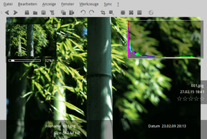
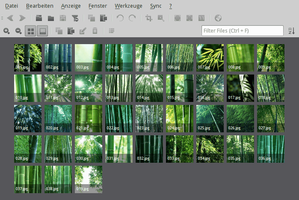
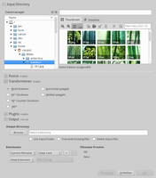
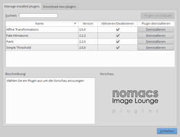
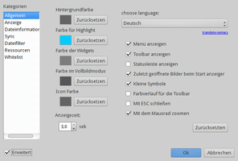

nomacs
Dieser Artikel wurde für die folgenden Ubuntu-Versionen getestet:
Ubuntu 16.04 Xenial Xerus
Ubuntu 14.04 Trusty Tahr
Zum Verständnis dieses Artikels sind folgende Seiten hilfreich:
nomacs Image Lounge  oder kurz nomacs ist ein Bildbetrachter mit zahlreichen Werkzeugen, die bis in den Bereich der Bildbearbeitung gehen. Darüber hinaus sind selten zu findende Zusatzfunktionen, wie z.B. die Erstellung von Fotomosaiken, die Fernsteuerung von mehreren Programminstanzen (auch im Netzwerk) und eine integrierte Stapelverarbeitung, mit deren Hilfe mehrere Bilder auf einmal bearbeitet werden können, enthalten.
oder kurz nomacs ist ein Bildbetrachter mit zahlreichen Werkzeugen, die bis in den Bereich der Bildbearbeitung gehen. Darüber hinaus sind selten zu findende Zusatzfunktionen, wie z.B. die Erstellung von Fotomosaiken, die Fernsteuerung von mehreren Programminstanzen (auch im Netzwerk) und eine integrierte Stapelverarbeitung, mit deren Hilfe mehrere Bilder auf einmal bearbeitet werden können, enthalten.
Auswahl einiger Funktionen:
Unterstützung zahlreicher Bildformate inkl. RAW-Bildern und PSD-Dateien (Photoshop)
Vorschaumodus mit Ordneransichten
Diaschau
Ein-/ausblendbare Infopanels: Dateiinformationen, Bewertung, Histogramm, Metadaten, Notizen
Anzeige der Geokodierung im Standardbrowser (via Google Maps)
Anzeige von Bildern in ZIP-Archiven (ohne Entpacken)
Erstellt wurde das plattformunabhängige Programm, das auch für Windows erhältlich ist, mit Hilfe der Grafikbibliothek Qt 5. Ein ähnlich komfortabler Bildbetrachter (aber ohne die zahlreichen Bearbeitungs- und Zusatzfunktionen) ist das Programm PhotoQt.
Installation¶
 Das Programm ist ab Ubuntu 16.04 in den offiziellen Paketquellen enthalten. Folgendes Paket muss installiert werden [1]:
Das Programm ist ab Ubuntu 16.04 in den offiziellen Paketquellen enthalten. Folgendes Paket muss installiert werden [1]:
nomacs (universe)
 mit apturl
mit apturl
Paketliste zum Kopieren:
sudo apt-get install nomacs
sudo aptitude install nomacs
PPA¶
Für ältere Ubuntu-Versionen kann man das "Personal Package Archiv" (PPA) [2] der Entwickler nutzen.
Adresszeile zum Hinzufügen des PPAs:
ppa:nomacs/stable
Hinweis!
Zusätzliche Fremdquellen können das System gefährden.
Ein PPA unterstützt nicht zwangsläufig alle Ubuntu-Versionen. Weitere Informationen sind der  PPA-Beschreibung des Eigentümers/Teams nomacs zu entnehmen.
PPA-Beschreibung des Eigentümers/Teams nomacs zu entnehmen.
Damit Pakete aus dem PPA genutzt werden können, müssen die Paketquellen neu eingelesen werden.
Nach dem Aktualisieren der Paketquellen erfolgt die Installation wie oben angegeben.
Optional werden – im Gegensatz zur Installation aus den offiziellen Paketquellen – noch einige Erweiterungen (Plugins) angeboten:
nomacs-plugins-affinetransformation (ppa)
nomacs-plugins-fakeminiatures (ppa)
nomacs-plugins-paint (ppa)
nomacs-plugins-threshold (ppa)
mit apturl
Paketliste zum Kopieren:
sudo apt-get install nomacs-plugins-affinetransformation nomacs-plugins-fakeminiatures nomacs-plugins-paint nomacs-plugins-threshold
sudo aptitude install nomacs-plugins-affinetransformation nomacs-plugins-fakeminiatures nomacs-plugins-paint nomacs-plugins-threshold
Verwendung¶
Bei Ubuntu-Varianten mit einem Anwendungsmenü erfolgt der Programmstart über den Menüeintrag "Grafik -> Nomacs" [3]. Alternativ kann man es auch mit dem Befehl nomacs aufrufen.
Beim ersten Programmstart wird man gebeten, die bevorzugte Sprache einzustellen. Die gewünschte Lokalisierung wird dann automatisch heruntergeladen und das Programm neu gestartet.
|  |
| Bildanzeige mit Infopanels |
|  |
| Thumbnails Vorschau (Ordneransicht) |
Die Standardfunktion als Bildbetrachter kann über den Menüpunkt "Fenster" angepasst werden. So lassen sich beispielsweise verschiedene halbtransparente Infopanels ein- oder auch wieder ausblenden:
Ansichten:
"Dateimanager" - Randspalte mit Dateiauswahl
"Metadaten" - Randspalte mit umfassender Metadaten-Anzeige
"Thumbnails" - Leiste mit Vorschaubildern
"Thumbnails Vorschau" - Bilder-Index des aktiven Ordners (Kontaktabzug)
"Ordnerscollbar" - Seitenleiste ähnlich den Thumbnails
Halbtransparente Info-Panels:
"Metadaten" - Exif-Daten
"Übersicht" - Lupenfunktion
"Player" - Diaschau
"Dateiinformationen" - Dateiname, Datum, Bewertung
"Histogramm" - Farbverteilung
"Notizen" - Bemerkungen, Kommentare etc.
Bearbeitungsfunktionen¶
Neben der Möglichkeit, über "Datei -> Öffnen mit" eine Liste von externen Bildbearbeitungsprogrammen zu pflegen bzw. das aktuelle Bild direkt an das gewünschte Programm zu übergeben, enthält Nomacs auch einige interne Bearbeitungsfunktionen. Diese sind über den Menüpunkt "Bearbeiten" zu finden. Eine Auswahl:
Kopieren, Einfügen, Löschen
Drehen (in 90°-Grad-Schritten)
Bildabmessungen anpassen (Höhe x Breite)
Zuschneiden (Ausschnitt)
Spiegeln
Invertieren
In Graustufen umwandeln
Kontrast spreizen usw.
Gespeichert werden kann in den Formaten JPG, PNG, TIFF, Windows Bitmap, Portable Bitmap, X11 Bitmap, X11 Pixmap, Wireless Bitmap und WebP.
Geokoordinaten anzeigen¶
Enthält ein Bild Geokoordinaten, werden diese mittels "Ansicht -> GPS Koordinaten anzeigen" mit dem Standard-Browser geöffnet und an Google Maps übergeben. Dazu wird die österreichische Maps-Variante  genutzt. Die Eingabe neuer oder die Änderung vorhandener Koordinaten ist nicht möglich. Im Artikel Metadaten/Geokodierung sind Programme aufgeführt, die hierbei weiterhelfen.
genutzt. Die Eingabe neuer oder die Änderung vorhandener Koordinaten ist nicht möglich. Im Artikel Metadaten/Geokodierung sind Programme aufgeführt, die hierbei weiterhelfen.
|  |
| Stapelverarbeitungs-Dialog |
Stapelverarbeitung¶
Eine Stapelverarbeitung (auch als "Batch processing" bezeichnet") bietet grundsätzlich die Möglichkeit, bestimmte Bearbeitungsschritte auf mehrere Bilder gleichzeitig anzuwenden. Unter "Werkzeuge -> Stapelverarbeitung" stehen folgende Funktionen zur Auswahl:
Größenanpassung
Bildrotation
Spiegelung
und einige weitere (siehe Abschnitt Plugins)
Pflicht ist in jedem Fall die Angabe eines Ausgabeordners.
Mosaikbild erstellen¶
Nomacs enthält unter "Werkzeuge -> Mosaikbild erstellen" ein sehr bequemes grafisches Werkzeug, um ein Fotomosaik zu erzeugen (siehe auch Metapixel). Dazu wird ein Bild als Motiv und ein Bilderordner mit (möglichst vielen) Einzelbildern benötigt. Das Endergebnis speichert man dann als separates Bild. Als Bildformate stehen alle von nomacs unterstützten zur Auswahl.
Plugins¶
|  |
| Plugin Manager |
Ab Version 3.0 existiert auch unter Linux eine Erweiterungsverwaltung, die über "Plugins -> Plugin Manager" aufgerufen wird. Eine Übersicht der vorhandenen Erweiterungen ist über die Registerkarte "Download new plugins" oder die Webseite nomacs | plugins möglich.
Hinweis:
Für die Linux-Version stehen Plugins derzeit nur bei der Installation über das PPA zur Verfügung (Stand: Februar 2016).
Mehrere Programminstanzen¶
Über "Datei -> Neue Instanz öffnen" kann ein weiteres, separates Programmfenster gestartet werden. So sind beispielsweise Bildvergleiche leichter möglich, die bei der üblichen sequentiellen Anzeige schwierig sein können. Arbeitet man mit mehreren Instanzen, ist zusätzlich der Menüpunkt "Sync" interessant, mit dem mehrere Instanzen synchron gehalten werden können. Die hier aufgeführten Funktionen können auch auf anderen Rechnern im lokalen Netzwerk (LAN) angewendet werden, auf denen nomacs bereits gestartet wurde. Dazu muss in den Einstellungen "Sync -> Netzwerksynchronisation" aktiviert werden.
|  |
| Konfiguration |
Einstellungen¶
Über den Menüpunkt "Bearbeiten -> Einstellungen" gelangt man zur Programmkonfiguration. Hier kann z.B. die eingangs ausgewählte Programmsprache geändert werden.
In der Grundeinstellung sind einige der Dialoge ausgeblendet, die erst über die Option "Erweitert" sichtbar werden. Konfigurationsdaten werden in der Datei ~/.config/nomacs/Image Lounge.conf im Homeverzeichnis gespeichert (Leerzeichen im Dateinamen beachten!).
Links¶
Documentation
- Funktionen, FAQ und TutorialsQuellcode
und Anleitung zum Kompilieren
Grafik
 Programmübersicht
Programmübersicht
- Erstellt mit Inyoka
-
 2004 – 2017 ubuntuusers.de • Einige Rechte vorbehalten
2004 – 2017 ubuntuusers.de • Einige Rechte vorbehalten
Lizenz • Kontakt • Datenschutz • Impressum • Serverstatus -
Serverhousing gespendet von